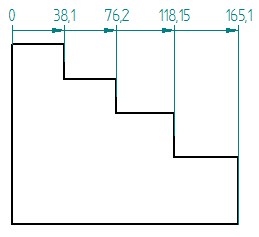
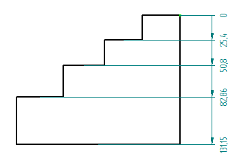

General tab (Drawing View Properties dialog box)
The General tab of the Drawing View Properties dialog box defines or modifies the drawing view name, scale, and display characteristics. Not all options are available for all drawing view types.
- Description
-
Describes a drawing view. You can type any additional notes or documentation you need.
- Sheet
-
Displays the drawing sheet name the drawing view exists on in the document. You can edit this value to move the drawing view to another working sheet in your document.
Using this option is similar to cutting and pasting drawing views to a new working sheet. All dimensions and annotations connected to geometry inside the view also move to the selected sheet.
- View Scale
-
Sets the drawing view scale using either of the following methods.
- Scale
-
Selects a predefined drawing scale ratio.
The specified ratio defines the size of the drawing in relation to the size of the real-world object. For a 2:1 ratio, the 2 represents the size of the drawing, and the 1 represents the size of the real-world object.
- Scale value
-
Defines the drawing view scale based on a value you type. You can enter a decimal value, a ratio, or a whole number.
If you enter a ratio or whole number, it converts to the equivalent decimal value in the Scale value box. However, the ratio is displayed in the Scale list, and it can be referenced in the drawing view caption or elsewhere on the drawing.
Example:-
If you enter 5, then the Scale value is displayed as 5.000, and the sheet Scale list is set to 5:1.
-
If you enter 1/3, then the Scale value is displayed as 0.333 and the sheet Scale list is set to 1/3.
-
If you enter a custom ratio, such as 3:2 or 3/2, the Scale value is displayed as 1.500, and the new ratio of 3:2 is added to the Scale list for the document.
-
- View Coordinate System
-
Specifies a user-defined coordinate system for displaying coordinate dimensions in the drawing view.
Note:When you place an ordinate dimension, the Use Coordinate System option on the Dimension command bar also must be selected. See Place a coordinate dimension using a coordinate system.
Note:The selected coordinate system can be displayed in the drawing view if the coordinate system is also shown on the Display tab (Drawing View Properties dialog box).
- Axis
-
Specifies the axis in the selected View Coordinate System to use as the dimension axis. Dimension lines are displayed perpendicular to the selected axis.
This option is available for coordinate dimensions.
Example:Coordinate system axis
Dimension line orientation
Perpendicular to Y axis

Perpendicular to X axis

- Show view annotation (Cutting Plane, Detail Envelope, Viewing Plane)
-
Displays the view annotation graphics—the cutting plane line, the detail envelope, or the viewing plane line—on the source drawing view. This option is available only when the selected view is a section, detail, or auxiliary view.
- Show Broken-Out Section view profiles
-
Displays the profiles for a broken-out section view for the selected drawing view. Displaying the profiles allows you to edit the profile shape and the depth of the cut for a broken-out section view.
- Create 3D Dimensions in Pictorial views
-
Allows creation of 3D dimensions, that is, dimensions that use the associative model to determine true distance, rather than the space on the 2D drawing in pictorial views. For more information, see 3D pictorial drawing view dimensions.
- Scale dimensions and annotations
-
Scales the annotations and dimensions inside a view. When this option is set, the annotations and dimensions display at the active Scale Value for the drawing view. When this option is cleared, the annotations and dimensions display and print according to the size specified in the dimension style. This option is useful when working with 2D foreign data that has been translated into Solid Edge Draft, such as 2D AutoCAD data.
- Hide break lines in broken state
-
Hides or shows the break lines in a broken region.
Note:This check box works with the Show Broken View option on the Drawing View Selection command bar.
- Show drawing view border
-
Specifies whether the border is displayed for the drawing view.
- Auto-Balloon on next update
-
When the drawing contains a parts list associated with the currently selected drawing view:
-
Select the check box to specify that you want to automatically update the balloons when the drawing view is updated.
-
Specify the type of parts list to reference when auto-balloons are regenerated.
-
Parts List
-
Family of Assemblies Parts List
-
-
Optionally, from the adjacent list, select a previously defined saved setting (derived from the General tab of the Parts List Properties dialog box) to apply to newly added balloons.
Note:This can be helpful if previously created balloons used saved settings, because you can select the same settings for the new balloons.
-
- Retrieve dimensions on next update
-
Specifies whether dimensions are retrieved from the associated model on the next drawing view update.
- Include PMI dimensions from model views
-
Includes PMI dimensions on drawing views which were created using a model view. When you generate a drawing view from a 3D model view and this option is set, any product manufacturing information (PMI) dimensions that exist in the 3D model view are displayed on the drawing view.
When this option is cleared, the drawing view goes out of date. When you update the drawing view, the PMI dimensions are removed from the drawing view.
This option is not valid for drawing views of assembly zones.
- Include PMI annotations from model views
-
Includes PMI annotations, such as balloons, feature control frames, and so forth, on drawing views which were created using a model view.
When this option is cleared, the drawing view goes out of date. When you update the drawing view, the PMI annotations are removed from the drawing view.
This option is not valid for drawing views of assembly zones.
 Lock drawing view position
Lock drawing view position-
Prevents the selected drawing views from being moved accidentally when dragging the cursor. When this box is checked, and the drawing view is highlighted, a lock symbol is displayed within the drawing view boundary to indicate its position is fixed.

A locked drawing view still can be moved using explicit commands. To learn more, see Drawing view manipulation.
Note:A convenient way to lock and unlock a drawing view is to use the Lock drawing view position button on the Drawing View Selection command bar.
- Rotation angle
-
Specifies the rotation angle of the drawing view. The selected drawing view rotates about its center according to the angle you specify. You cannot change the rotation angle for broken views or views that have broken regions.
When a view is selected, one of these drawing view status messages is displayed at the bottom of the General tab:
-
This drawing view is Out-of-Date with respect to the model geometry.
-
This drawing view is Up-to-Date with respect to the model geometry.
-
This view is a two-dimensional user view which is not connected to any geometry.
You can update an out-of-date view using the Update View command from the view shortcut menu. You can update all out-of-date views in the drawing using the Home tab→Drawing Views group→Update Views command on the ribbon.